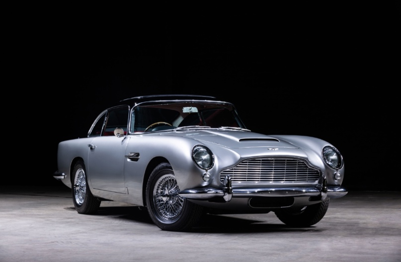
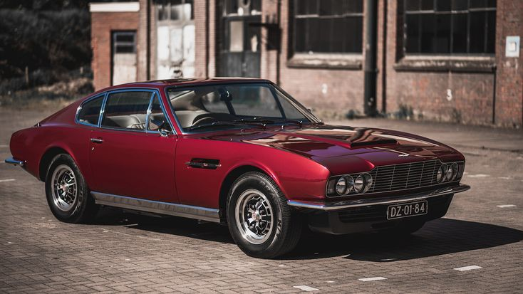
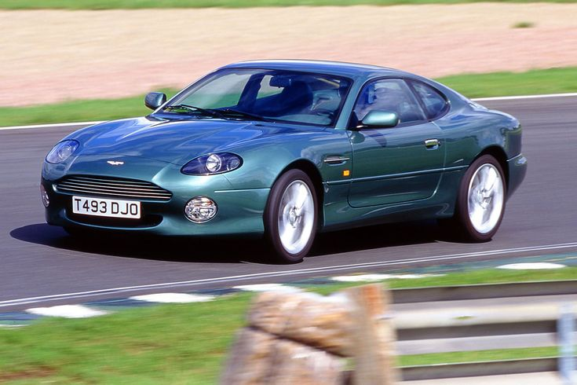
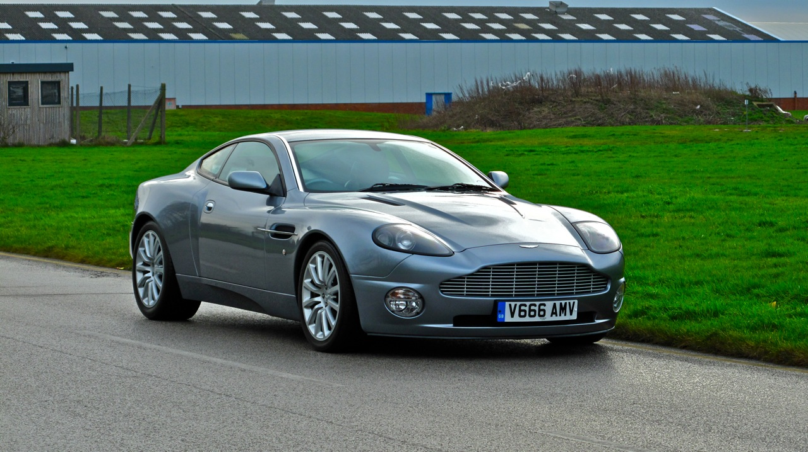
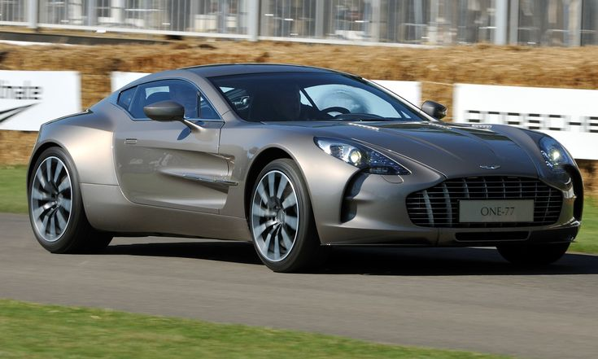
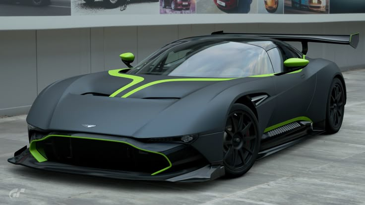

Aston Martin DB2 (1950–1953).
Лёгкий и элегантный спортивный автомобиль с длинным капотом, плавно сужающейся кормой и узнаваемой решёткой радиатора.


Лёгкий и элегантный спортивный автомобиль с длинным капотом, плавно сужающейся кормой и узнаваемой решёткой радиатора.
Модель, прославленная благодаря серии фильмов о Джеймсе Бонде. Дизайн: стремительный силуэт, большая вытянутая решётка радиатора, обилие хромированных элементов и выверенные пропорции кузова.
Автомобиль примечателен тем, что вместе с вариантами рядной «шестёрки» выпускалась и версия V8 — для того времени довольно редкое и смелое решение для британской марки.
Модель с элегантными пропорциями — длинный нос, короткая кормовая часть и низкая линия крыши. За внешность отвечал известный дизайнер Ян Каллум, который заложил основу форм будущих Aston Martin.
Сочетал в себе туринг и элементы суперкара, имел харизматичный силуэт с мускулистыми боками и широкой колеёй. Главная «фишка» дизайна — крупные воздухозаборники на капоте, подчёркивающие мощь силового агрегата V12.
Суперкар, построенный полностью вручную, представлял собой альтернативу Bugatti Veyron.
Сверхлёгкий, футуристически выглядящий Aston Martin, наиболее известный своей оптимальной производительностью. Автомобиль напоминает реактивный самолёт на колёсах, был разработан как самый быстрый автомобиль на гоночной трассе и даже не разрешён для уличного вождения.
